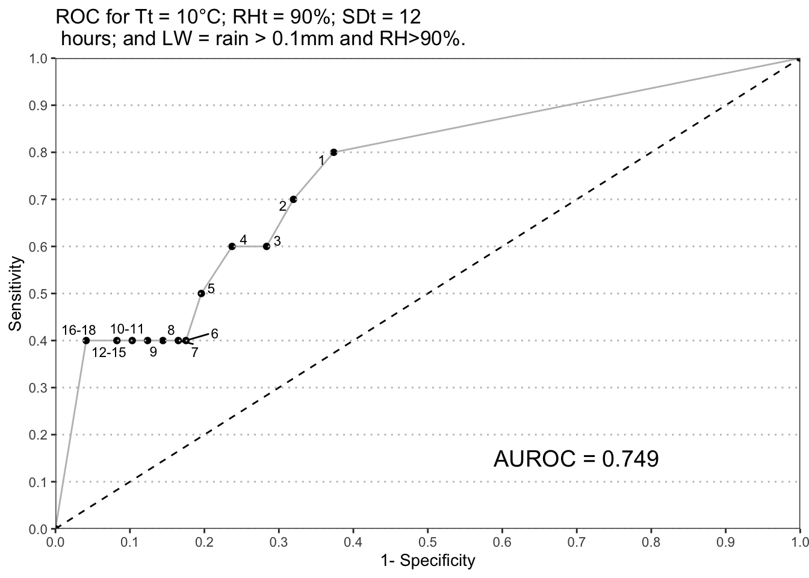

Packages needed for the analysis are loaded. If the libraries do not exist locally, they will be downloaded.
list.of.packages <-
c(
"tidyverse",
"readxl",
"data.table",
"knitr",
"padr",
"devtools",
"pracma",
"remotes",
"parallel",
"pbapply",
"ggrepel",
"ggthemes",
"egg",
"rsm",
"GGally",
"R.utils",
"rcompanion",
"mgsub",
"here",
"stringr",
"pander"
)
new.packages <-
list.of.packages[!(list.of.packages %in% installed.packages()[, "Package"])]
#Download packages that are not already present
if (length(new.packages))
install.packages(new.packages)
if ("gt" %in% installed.packages() == FALSE)
remotes::install_github("rstudio/gt")
list.of.packages <- c(list.of.packages, "gt")
packages_load <-
lapply(list.of.packages, require, character.only = TRUE)
#Print warning if there is a problem with installing/loading some of packages
if (any(as.numeric(packages_load) == 0)) {
warning(paste("Package/s", paste(list.of.packages[packages_load != TRUE]), "not loaded!"))
} else {
print("All packages were successfully loaded.")
}## [1] "All packages were successfully loaded."rm(list.of.packages, new.packages, packages_load)Implementation of the model
IrishRulesModel <- function(weather,
param = NULL,
infill_gap = NULL) {
# wetness requirement prior to infection accumulation start
# time window of 6 hours, 3 before/after sporulation ends
wet_before <- 3
wet_after <- 3
# Parameter list
if (is.null(param)) {
rh_thresh <- 90
temp_thresh <- 10
hours <- 12 #sum of hours before EBH accumulation
} else {
#pass a vector of parameters
rh_thresh <- as.numeric(param[2])
temp_thresh <- as.numeric(param[3])
hours <- as.numeric(param[4])
lw_rhum <-
param[5] #if is NA then only rain data will be used
}
#threshold for estimation of leaf wetness using relative humidity
lw_rhum_threshold <- 90
weather[["rain"]] -> rain
if ("rhum" %in% names(weather)) {
weather[["rhum"]] -> rh
}
if ("rh" %in% names(weather)) {
weather[["rh"]] -> rh
}
weather[["temp"]] -> temp
# This function to infil missing values to let the model run
#If maximum infill gap is not provided it is defaulted to 7
if (is.null(infill_gap)) {
infill_gap <- 7
}
if (sum(is.na(with(weather, rain, temp, rhum))) > 0) {
temp <-
round(zoo::na.spline(temp, na.rm = FALSE, maxgap = infill_gap), 1)
rh <-
round(zoo::na.spline(rh, na.rm = FALSE, maxgap = infill_gap), 0)
rh <- sapply(rh, function(x) ifelse(x > 100, x <- 100, x))
}
if (sum(is.na(with(weather, rain, temp, rhum))) > 0) {
stop(print("The sum of NAs is more than 7! Check your weather data."))
}
#"Out of boounds"
rain <- c(rain, rep(0, 20))
temp <- c(temp, rep(0, 20))
rh <- c(rh, rep(0, 20))
# conditions for sporulation
criteria <- as.numeric(temp >= temp_thresh & rh >= rh_thresh)
#cumulative sum of hours that meet the criteria for sporulatoion with restart at zero
criteria_sum <-
stats::ave(criteria, cumsum(criteria == 0), FUN = cumsum)
#Initiate risk accumulation vector
risk <- rep(0, length(temp))
criteria_met12 <-
as.numeric(criteria_sum >= hours) #accumulation of EBH starts after sporulation
idx <- which(criteria_sum == hours)
#If there are no accumulations return vector with zeros
if (sum(criteria_sum == hours) == 0) {
#breaks the loop if there is no initial accumulation of 12 hours
head(risk, -20)
} else{
for (j in 1:length(idx)) {
#switch that looks if there was wetness: first rain, then both rain and rh, if rh exists
if (if (lw_rhum=="rain") {
#if only rain
(sum(rain[(idx[j] - wet_before):(idx[j] + wet_after)]) >= 0.1) #just see rain sum
} else{
any((any(rh[(idx[j] - wet_before):(idx[j] + wet_after)] >= lw_rhum_threshold)) |
#take both as possible switches
(sum(rain[(idx[j] - wet_before):(idx[j] + wet_after)]) >= 0.1))
})
# outputs true or false
{
n <- idx[j] #start accumulation from 12th hour
} else {
n <- idx[j] + 4 #start accumulation from 16th hour
}
s <- criteria_met12[n]
# if a break of less than or equal to 5 hours
m <- n - 1
while (s == 1)
{
risk[n] <- risk[m] + 1
n <- n + 1
m <- n - 1
s <- criteria[n]
if (s == 0 && (criteria[n + 2] == 1)) {
n = n + 2
s = 1
} else if (s == 0 && (criteria[n + 3] == 1)) {
n = n + 3
s = 1
} else if (s == 0 && (criteria[n + 4] == 1)) {
n = n + 4
s = 1
} else if (s == 0 && (criteria[n + 5] == 1)) {
n = n + 5
s = 1
}
}
}
head(risk, -20) #remove last 20 values that were added to vectors to prevent "Out of bounds" issue
}
}Emergence takes up to 3 weeks under Irish conditions. Period when healthy host present from emergence until 14 days prior to a first observation of the disease in the field. Warning period 10-day ‘warning period’ considered to last from -14 days to – 4 days prior to disease observed in the field. The 4-day period was assumed to be a minimum time needed from incubation period, for the establishment of visible disease symptoms in the field.
#Get subsets of data for period before the epidemics were initiated
dates_cut <-
read_csv(
here::here("data", "op_2007_16", "raw", "plantingdates.csv"),
col_types = cols(
disease_observed = col_date(format = "%d/%m/%Y"),
last_assessment = col_date(format = "%d/%m/%Y")
)
)## Warning: The following named parsers don't match the column names:
## last_assessmentdates_cut$planting_date <-
as.Date(dates_cut$planting_date, format = "%d/%m/%Y")
dates_cut$emergence <- as.Date(dates_cut$planting_date) + 21
#st warnning period to 14 days before disease onset
dates_cut <- add_column(dates_cut, disease_onset = as.Date(dates_cut$disease_observed) - 4,
.before = "disease_observed")
dates_cut <- add_column(dates_cut, warning = as.Date(dates_cut$disease_onset) - 10, .before = "disease_onset" )
rownames(dates_cut) <- NULL
dates_cut %>% rename_all(. %>% capitalize() %>% gsub("_", " ", .))The set of the most important variables of Irish rules model is evaluated. The Excel sheet with parameters under evaluation is available in data folder and can be changed and used for model evaluation in other locations. Column named 90_10_12_rain represents set of the original model parameters.
#read in parameters
parameters <-
read_excel(here::here("data", "op_2007_16", "raw", "par.xlsx"), sheet = "par")
parameters %>% kable() %>% kableExtra::kable_styling(latex_options = "striped",full_width = FALSE)| rh_thresh | temp_thresh | hours | lw_rh |
|---|---|---|---|
| 93 | 13 | 15 | rain |
| 92 | 12 | 14 | rainrh |
| 91 | 11 | 13 | NA |
| 90 | 10 | 12 | NA |
| 89 | 9 | 11 | NA |
| 88 | 8 | 10 | NA |
| 87 | 7 | 9 | NA |
params <- expand.grid(parameters[, 1:3])
#set the leaf wetness threshold to NA, meaning only rain is considered as an estimator for leaf wetness, as in original model
params$lw_rh <- "rain"
#Repeat all of the analysis considering rh >= 90% and rain as an estimator of leaf wetness
params2 <- params
params2$lw_rh <- as.character("rainrh")
parameters <- bind_rows(params, params2)
rm(params, params2)
# set a column with a name for each model
parameters <- add_column(parameters, model = NA, .before = 1)
for (i in seq_along(1:nrow(parameters))) {
parameters[i, 1] <-
paste0(parameters[i, 2:length(names(parameters))], collapse = "_")
}
str(parameters)## 'data.frame': 686 obs. of 5 variables:
## $ model : chr "93_13_15_rain" "92_13_15_rain" "91_13_15_rain" "90_13_15_rain" ...
## $ rh_thresh : num 93 92 91 90 89 88 87 93 92 91 ...
## $ temp_thresh: num 13 13 13 13 13 13 13 12 12 12 ...
## $ hours : num 15 15 15 15 15 15 15 15 15 15 ...
## $ lw_rh : chr "rain" "rain" "rain" "rain" ...The model has been run with each set of parameters, and columns with model outputs are attached to weather data frame. Names of new columns correspond to the set of parameters supplied.
# This chunk is not run
load(OP, file = here::here("data", "op_2007_16", "OP_2007-2016_infilled.RData"))
for(i in 1:nrow(parameters)) {
loop_var <- apply(parameters[i, ], 1, function(x) {
#run the model with different parameters
k <-
lapply(split(OP, factor(OP$year)), function(chunk)
IrishRulesModel(chunk, x)) #get the list of outputs
unlist(k) -> k #make it a vector
})
OP[, ncol(OP) + 1] <- as.numeric(loop_var)
rm(loop_var)
names(OP)[ncol(OP)] <- paste0(parameters[i, 1])
print(paste(i, "of", nrow(parameters)))
}
nn <- paste0(names(OP[, 26:length(names(OP))]), "_ebh", "")
setnames(OP, old = c(names(OP[, 26:length(names(OP))])), new = nn)
rm( nn)Instead, just load the output from a prior model run to save time.
load(file = here::here("data", "op_2007_16", "OP_for_analysis.RData"))
# Sample of outputs
head(OP[, c(1, 7, 9, 15, 24:30)], 5)The function SensParametersCalc calculates Sensitivity and Specificity of each variation of the model.
SensParametersCalc <-
function(y,
weather_data,
dates_cut,
prot_duration = NULL) {
#Set the warning threshold and run the rest of the script
warning_threshold <- y
#data
fun_df <- weather_data
#A function to subset the data for the period of interest in each year
test.overlap = function(vals, start_date, end_date) {
rowSums(mapply(function(a, b)
between(vals, a, b),
start_date, end_date)) > 0
}
#Subset each year from emergence to disease onset and calculate number of FP and TN
fptn_df <-
fun_df %>%
#Subset the of the data for the duration of non-warning period for each year
filter(test.overlap(short_date, dates_cut$emergence, dates_cut$warning)) %>%
select(
ends_with("year_var"),
ends_with("week_var"),
ends_with("doy"),
ends_with("_ebh")
) %>%
group_by(year_var) %>%
#if there was an accumulation from previous day, it would triger a warning
#Check all of the first five rows because of possible break of 5 hours
mutate_at(., .vars = colnames(.[grep("ebh", colnames(.))]),
funs(
ifelse(row_number() <= 5 & . >= warning_threshold,
warning_threshold, .)
)) %>%
#all five values all changed so we have to delete 4 of them and leave only 1
mutate_at(., .vars = colnames(.[grep("ebh", colnames(.))]),
funs(ifelse(
row_number() <= 4 & . == warning_threshold, 0, .
))) %>%
# Change values coresponding to the warning threshold to 1 for calculating the sum
mutate_at(., .vars = colnames(.[grep("ebh", colnames(.))]),
funs(ifelse(. == warning_threshold, 1, 0))) %>%
group_by(year_var, week_var, doy) %>%
summarise_at(., .vars = colnames(.[grep("ebh", colnames(.))]), .funs = sum)
#Each warning would cause treatment that will keep the plants protected for a period of time
prot_duration <-
ifelse(is.null(prot_duration), 7, prot_duration)#If not defined default value is 7 days
TreatmentWindow <- function(x, prot_duration) {
# don't leave commented code. Use or remove
# x <- fptn_df[["93_10_12_rain_ebh"]]
y <-
vector(mode = "numeric", length = length(x) + prot_duration)
for (i in seq_along(x)) {
if (x[i] == 1) {
y[i:c(i + prot_duration)] <- 1
}
}
y
}
fptn_df[grep("ebh", colnames(fptn_df))] <-
lapply(fptn_df[grep("ebh", colnames(fptn_df))], function(x)
TreatmentWindow(x, prot_duration))
FP <-
summarise_all(fptn_df[, colnames(fptn_df[, grep("ebh", colnames(fptn_df))])], .funs = sum)
#Each warning will cause a treatment
total_days <-
nrow(fptn_df) #total duration of non_warning period
TN <- total_days - FP
##########################################################
#subset for 10 days prior to disease onset: Warning period
tpfn_df <-
fun_df %>%
#Subset of the data for the duration WARNING period in each year
filter(test.overlap(short_date, dates_cut$warning, dates_cut$disease_onset)) %>%
select(
ends_with("year_var"),
ends_with("week_var"),
ends_with("doy"),
ends_with("_ebh")
) %>%
mutate_at(., .vars = colnames(.[grep("ebh", colnames(.))]),
funs(
ifelse(row_number() <= 5 &
. >= warning_threshold, warning_threshold, .)
)) %>%
#all five values is changed so we have to delete 4 of them and leave only one
mutate_at(., .vars = colnames(.[grep("ebh", colnames(.))]),
funs(ifelse(
row_number() <= 4 & . == warning_threshold,
0, .
))) %>%
mutate_at(., .vars = colnames(.[grep("ebh", colnames(.))]),
funs(ifelse(. == warning_threshold, 1, 0))) %>%
group_by(year_var) %>%
summarise_at(., .vars = colnames(.[, c(4:length(colnames(.)))]) , .funs = sum) %>%
mutate_at(., #some years have two warnings during the warning period
.vars = colnames(.[grep("ebh", colnames(.))]), funs(ifelse(. >= 1 , 1, 0)))
# tpfn_df[,1:4]
TP <-
summarise_all(tpfn_df[, colnames(tpfn_df[, grep("ebh", colnames(tpfn_df))])], .funs = sum)
#number of outbreaks(in this case there is only one location, so number of outbreaks is same as number of years.
unique(tpfn_df$year_var) %>%
length() -> no_of_outbreaks
FN <- no_of_outbreaks - TP
#summary
test <- data.frame(
model = names(FP),
FP = t(FP[1,]),
tn = t(TN[1,]),
TP = t(TP[1,]),
FN = t(FN[1,])
)
names(test) <- c("model", "FP", "TN", "TP", "FN")
test <- data.frame(test, row.names = NULL)
test$model <- str_replace(test$model, "_ebh", "")
test$sens <- with(test, TP / (TP + FN)) #PTP sensitivity
test$spec <- with(test, TN / (TN + FP)) #PTN specificity
return_df <- test[, c("model", "sens")]
return_df$"one_min_spec" <- 1 - test[, "spec"]
return_df$cut_point <- warning_threshold
return(return_df)
}This function was applied to output of each variation of the model with varying warning threshold from 1 to 18 EBH. The function is run with parallel processing support because it reduces the run time to 4 minutes with 4 cores i7(7th generation) and 12GB RAM laptop.
# this chunk not evaluated
#select max warning threshold
warning_thresholds <- 1:18
begin <- Sys.time()
#Detect the number of cores and set it to total minus 1, if there are multiple cores, to avoid overload
cores <- ifelse(detectCores() > 1, detectCores()-1, 1)
cl <- makeCluster(cores)
clusterExport(cl, c("OP", "dates_cut", "SensParametersCalc"))
clusterEvalQ(cl, library("tidyverse"))
ROC <- pbapply::pblapply(warning_thresholds, function(x)
{
xx <- SensParametersCalc(x,OP, dates_cut, prot_duration = 7)
return(xx)
},
cl = cl
)
begin- Sys.time() #check the duration of the process in the console
stopCluster(cl)Rather, the results of calculations from a prior run can be directly loaded.
load(file = here::here("data", "op_2007_16","results","ROC_output.Rdata"))Sort the outputs for each model variation.
ROC_data <-
as.data.frame(data.table::rbindlist(ROC))
rownames(ROC_data) <- NULL
# rm(ROC) #Outputs stored for each warning threshold/cutoffs
ROC_data <-
base::split(ROC_data, ROC_data$model) #Get the list of all model outputs with different cutoffs
ROC_data[[1]] %>% gt()| model | sens | one_min_spec | cut_point |
|---|---|---|---|
| 87_10_10_rain | 1.0 | 0.6443299 | 1 |
| 87_10_10_rain | 1.0 | 0.6005155 | 2 |
| 87_10_10_rain | 1.0 | 0.5773196 | 3 |
| 87_10_10_rain | 1.0 | 0.4484536 | 4 |
| 87_10_10_rain | 0.8 | 0.4201031 | 5 |
| 87_10_10_rain | 0.8 | 0.3891753 | 6 |
| 87_10_10_rain | 0.8 | 0.3685567 | 7 |
| 87_10_10_rain | 0.8 | 0.3556701 | 8 |
| 87_10_10_rain | 0.8 | 0.3376289 | 9 |
| 87_10_10_rain | 0.8 | 0.3247423 | 10 |
| 87_10_10_rain | 0.8 | 0.3247423 | 11 |
| 87_10_10_rain | 0.8 | 0.3015464 | 12 |
| 87_10_10_rain | 0.8 | 0.2835052 | 13 |
| 87_10_10_rain | 0.8 | 0.2628866 | 14 |
| 87_10_10_rain | 0.8 | 0.2525773 | 15 |
| 87_10_10_rain | 0.8 | 0.2319588 | 16 |
| 87_10_10_rain | 0.7 | 0.2113402 | 17 |
| 87_10_10_rain | 0.6 | 0.2113402 | 18 |
Contingency tables were created with sensitivity and specificity values from confusion matrix for each decision threshold for all model outputs from 1 to 18 EBH accumulation. Area under the curve (AUROC) was calculated using trapezoidal rule for each variation of the model outputs.
#function to calculate AUROC for list of inputs
GetAUC <- function(fun_df) {
fun_df <- fun_df[rev(order(fun_df$cut_point)), ]
auc <-
pracma::trapz(c(0, fun_df$one_min_spec, 1), c(0, fun_df$sens, 1))
result <- data.frame(model = unique(fun_df$model),
auc = auc)
return(result)
}
AUROC_data <- lapply(ROC_data, function(x)
GetAUC(x))
AUROC_data <-
lapply(AUROC_data, function(x)
mutate_if(x, is.factor, as.character))
AUROC_data <- bind_rows(AUROC_data)Empirical ROC curve was created for each variation of the model.
PlotROC <- function(df, numbering = NULL) {
df <- df[rev(df$cut_point), ]
#append rows for plotting
x <- rep(NA, ncol(df))
df <- rbind(x, df)
df[nrow(df) + 1, ] <- NA
df$model <- unique(df$model[!is.na(df$model)])
df[1, c("sens", "one_min_spec")] <- 0
df[nrow(df), c("sens", "one_min_spec")] <- 1
#Condense labels for a single cutoff point
df <-
df %>%
group_by(one_min_spec, sens, model) %>%
summarise(cut_point = ifelse(all(is.na(cut_point)),
"",
range(cut_point, na.rm = TRUE) %>%
unique() %>%
paste(collapse = "-"))) %>%
ungroup()
#find AUROC value for selected model
if("model"%in% names(AUROC_data)){
AUROC_lab <- paste("AUROC =", round(AUROC_data[AUROC_data$model == unique(df$model), ]$auc, 3))
} else { #some changes in next chnk of code made this necessary, col model will be split and removed
if(str_split(unique(df$model), "_")[[1]][4] == "rainrh"){
mod_var <- str_split(unique(df$model), "_")
mod_var[[1]][4] <- "rainrh"
implode <- function(..., sep='') {paste(..., collapse=sep)}
mod_var <- implode(mod_var[[1]],sep="_")
}else{
mod_var <- str_split(unique(df$model), "_")
implode <- function(..., sep='') {paste(..., collapse=sep)}
mod_var <- implode(mod_var[[1]],sep="_")
}
auc_val <-
unite(AUROC_data, col = model, colnames(AUROC_data[,1:4]), sep = "_") %>%
filter(model == mod_var) %>%
select(auc)
AUROC_lab <- paste("AUROC =", round(auc_val, 3))
}
#Print title without or with lettering (for later analysis)
pars <- str_split(df[1,"model"], "_")
title <-
paste0( ifelse(is.null(numbering),"", paste0(letters[numbering],") ")),
"ROC for ",
"Tt = ", pars[[1]][[2]],"°C; ",
"RHt = ", pars[[1]][1], "%; ",
"SDt = ", pars[[1]][3],
"\n",
" hours; and LW = rain > 0.1mm and RH>90%.")
ggplot(df, aes(one_min_spec, sens, label = cut_point)) +
geom_abline(
intercept = 0,
slope = 1,
color = "black",
linetype = "dashed"
) +
geom_path(colour = "gray") +
geom_point(colour = "black") +
geom_text_repel(size = 3) +
scale_y_continuous(limits = c(0, 1),
expand = c(0, 0),
breaks = c(0, 0.1, 0.25, 0.5, 0.75, 0.9, 1),
name = "Sensitivity") +
scale_x_continuous(limits = c(0, 1),
expand = c(0, 0),
breaks = c(0, 0.1, 0.25, 0.5, 0.75, 0.9, 1),
name = "1- Specificity") +
ggtitle(title) +
annotate(
"text",
x = 0.7,
y = 0.15,
label = AUROC_lab,
size = 5
) +
theme_bw() +
theme(
text = element_text(size = 10.5),
panel.grid.major = element_blank(),
panel.grid.minor = element_blank()
)
}
PlotROC(ROC_data[["90_10_12_rain"]])
Prepare the data for further analysis and check the resulting data frame.
params <- colnames(parameters[, names(parameters) != "model"])
AUROC_data <-
separate(AUROC_data, model, into = params, sep = "_")
# AUROC_data[AUROC_data$lw_rh == "r+rh", "lw_rh"] <- "rainrh"
AUROC_data[, 1:3] <-
lapply(AUROC_data[, 1:3], as.numeric)
data <- data.frame(AUROC_data)
head(data) %>% gt()| rh_thresh | temp_thresh | hours | lw_rh | auc |
|---|---|---|---|---|
| 87 | 10 | 10 | rain | 0.8064433 |
| 87 | 10 | 10 | rainrh | 0.7966495 |
| 87 | 10 | 11 | rain | 0.7680412 |
| 87 | 10 | 11 | rainrh | 0.7997423 |
| 87 | 10 | 12 | rain | 0.7128866 |
| 87 | 10 | 12 | rainrh | 0.7997423 |
Packages used
sessionInfo()## R version 3.5.1 (2018-07-02)
## Platform: x86_64-w64-mingw32/x64 (64-bit)
## Running under: Windows 10 x64 (build 17134)
##
## Matrix products: default
##
## locale:
## [1] LC_COLLATE=English_United States.1252
## [2] LC_CTYPE=English_United States.1252
## [3] LC_MONETARY=English_United States.1252
## [4] LC_NUMERIC=C
## [5] LC_TIME=English_United States.1252
##
## attached base packages:
## [1] parallel stats graphics grDevices utils datasets methods
## [8] base
##
## other attached packages:
## [1] bindrcpp_0.2.2 gt_0.1.0 pander_0.6.3
## [4] here_0.1 mgsub_1.5.0 rcompanion_2.0.10
## [7] R.utils_2.7.0 R.oo_1.22.0 R.methodsS3_1.7.1
## [10] GGally_1.4.0 rsm_2.10 egg_0.4.2
## [13] gridExtra_2.3 ggthemes_4.0.1 ggrepel_0.8.0
## [16] pbapply_1.3-4 remotes_2.0.2 pracma_2.2.2
## [19] devtools_1.13.6 padr_0.4.1 knitr_1.21
## [22] data.table_1.11.8 readxl_1.2.0 forcats_0.3.0
## [25] stringr_1.3.1 dplyr_0.7.8 purrr_0.2.5
## [28] readr_1.3.1 tidyr_0.8.2 tibble_2.0.1
## [31] ggplot2_3.1.0 tidyverse_1.2.1
##
## loaded via a namespace (and not attached):
## [1] TH.data_1.0-9 colorspace_1.3-2 modeltools_0.2-22
## [4] rprojroot_1.3-2 estimability_1.3 rstudioapi_0.8
## [7] manipulate_1.0.1 mvtnorm_1.0-8 lubridate_1.7.4
## [10] coin_1.2-2 xml2_1.2.0 codetools_0.2-15
## [13] splines_3.5.1 jsonlite_1.6 broom_0.5.1
## [16] compiler_3.5.1 httr_1.4.0 emmeans_1.3.1
## [19] backports_1.1.3 assertthat_0.2.0 Matrix_1.2-14
## [22] lazyeval_0.2.1 cli_1.0.1 htmltools_0.3.6
## [25] tools_3.5.1 coda_0.19-2 gtable_0.2.0
## [28] glue_1.3.0 Rcpp_1.0.0 cellranger_1.1.0
## [31] nlme_3.1-137 lmtest_0.9-36 xfun_0.4
## [34] rvest_0.3.2 MASS_7.3-50 zoo_1.8-4
## [37] scales_1.0.0 hms_0.4.2 sandwich_2.5-0
## [40] expm_0.999-3 RColorBrewer_1.1-2 yaml_2.2.0
## [43] memoise_1.1.0 sass_0.1.0.9000 EMT_1.1
## [46] reshape_0.8.8 stringi_1.2.4 highr_0.7
## [49] nortest_1.0-4 checkmate_1.8.5 boot_1.3-20
## [52] rlang_0.3.1 pkgconfig_2.0.2 commonmark_1.7
## [55] evaluate_0.12 lattice_0.20-35 bindr_0.1.1
## [58] tidyselect_0.2.5 plyr_1.8.4 magrittr_1.5
## [61] R6_2.3.0 DescTools_0.99.26 generics_0.0.2
## [64] multcompView_0.1-7 multcomp_1.4-8 pillar_1.3.1
## [67] haven_2.0.0 foreign_0.8-70 withr_2.1.2
## [70] survival_2.42-3 modelr_0.1.2 crayon_1.3.4
## [73] rmarkdown_1.11.3 grid_3.5.1 digest_0.6.18
## [76] webshot_0.5.1 xtable_1.8-3 stats4_3.5.1
## [79] munsell_0.5.0 viridisLite_0.3.0 kableExtra_1.0.1